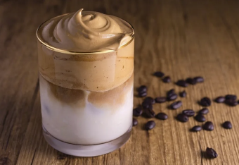

Café Cremoso

Ingredientes
- 50g de Café Solúvel
- 2 xícaras de Açucar
- 1 xícara de Água Quente
Como servir
- Coloque tudo em Uma Tigela
- Bata por Cerca de 10 Minutos
- O creme Ficará Claro e clareado
- Guarde no congelador
-
Dica
- Adicione canela ou chocolate em pó
